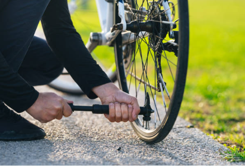
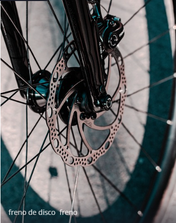
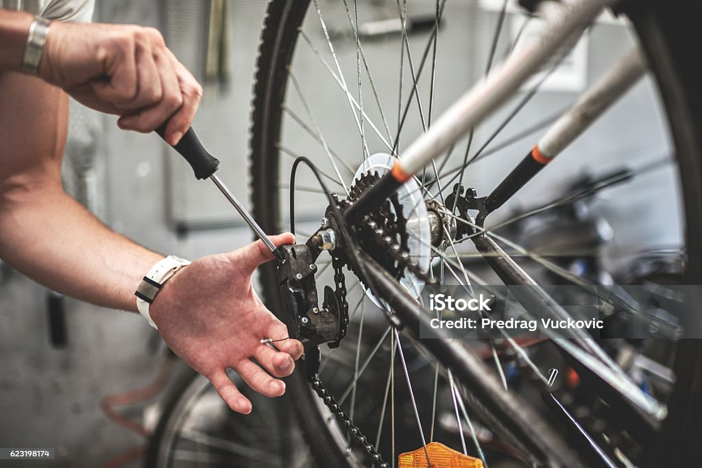
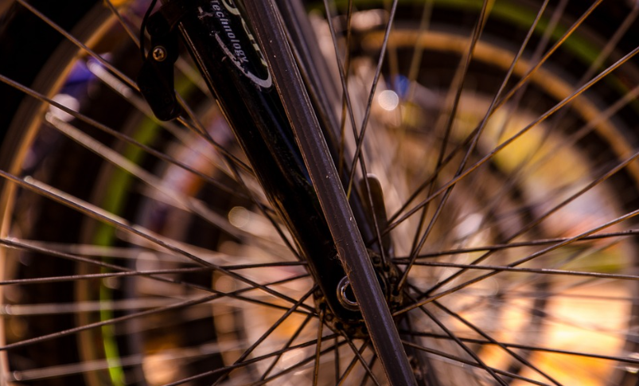
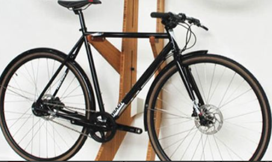

Consejos para el Mantenimiento y Reparación de Bicicletas
Mantener tu bicicleta en buen estado es esencial para garantizar un rendimiento óptimo y una larga vida útil. Aquí tienes algunos consejos prácticos para cuidar tu bicicleta:
-
Revisa y lubrica la cadena regularmente:
Una cadena bien lubricada reduce la fricción y el desgaste de los componentes de la transmisión. Limpia la cadena con un desengrasante y aplícale lubricante específico para bicicletas.

-
Verifica la presión de los neumáticos:
Mantén los neumáticos inflados a la presión recomendada por el fabricante. Esto no solo mejora la eficiencia de pedaleo, sino que también reduce el riesgo de pinchazos.
 -
Inspecciona los frenos:
Asegúrate de que los frenos estén en buen estado y bien ajustados. Revisa las pastillas de freno y cámbialas si están desgastadas.
 -
Ajusta los cambios:
Mantén los cambios bien ajustados para garantizar un cambio de marchas suave y preciso. Si notas que las marchas no entran correctamente, puede ser necesario ajustar los tornillos de los desviadores.
 -
Verifica la tensión de los radios:
Asegúrate de que los radios de las ruedas estén bien tensados. Una rueda con radios flojos puede deformarse y afectar la conducción.
 -
Mantén limpia tu bicicleta:
Limpia regularmente el cuadro y los componentes para evitar la acumulación de suciedad y barro, que pueden provocar corrosión y desgaste prematuro.
-
Realiza revisiones periódicas:
Lleva tu bicicleta a un taller especializado para una revisión completa al menos una vez al año. Un profesional puede detectar y corregir problemas que podrías pasar por alto.
-
Almacena tu bicicleta adecuadamente:
Si no vas a usar tu bicicleta durante un tiempo prolongado, guárdala en un lugar seco y protegido de la intemperie. Esto evitará daños causados por la humedad y el sol.

Vídeo Tutorial
Aquí tienes un vídeo con consejos adicionales sobre el mantenimiento de bicicletas:
s